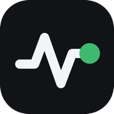

Claude · Sonnet
Claude Code · 9 sessions
984Ktokens

AgentTelemetryYour AI work, in focus
See the tokens, time, and estimated cost behind your AI coding. One private dashboard, right on your machine.
Illustrative preview
One view across your tools
Bring usage from your coding tools into one calm view. Follow tokens and estimated cost by model, project, session, day, and more — using the logs already on your computer.
Sample data for demonstration. Your dashboard starts with your own local logs.
Sample estimates use API list prices; subscription plans and actual bills can differ.
Claude Code · 9 sessions
Codex · 6 sessions
Copilot · 2 sessions
Cursor · 1 session
Illustrative totals are grouped by model; tool attribution stays with the coding surface.
9 sessions · 1.1M tokens
6 sessions · 720K tokens
2 sessions · 390K tokens
1 session · 190K tokens
An illustrative mix. Each tool may record different amounts of usage detail.
Claude Code · 8 sessions
Codex · 5 sessions
Copilot · 3 sessions
Cursor · 2 sessions
Project names and usage above are invented examples from a local dashboard.
In this sample, 82% of repeated context came from cache reads.
Usage rose after the afternoon coding sessions began.
Review task needs alongside the model and cost breakdowns.
These are descriptive sample observations; the page does not change settings or estimate savings.
Parsed usage is summarized on this computer.
Illustrative status only. This marketing preview never reads or displays your real ledger.
Claude Code · api-service
Codex · storefront
Copilot · documentation
Cursor · playground
Names and counts above are invented examples. Some tools record partial usage; missing data is marked in the dashboard.
Illustrative only. Optional device sharing works over your local network after you turn it on.
Eight views, one consistent picture. Compare tools, models, projects, sessions, and time without leaving your machine.
TOKENS · TIME · COSTNo account to create. No API key to paste. AgentTelemetry reads the usage records your tools have already saved.
Choose the native menu bar or system tray app, or start the local dashboard with one command.
YOUR COMPUTERUsage is parsed and summarized on your device, then kept in a local ledger you control.
NO NEW TRACKERSee where time and tokens go, compare your tools, and notice what changes.
YOUR OWN PICTUREThe optional macOS menu bar and Windows system tray app brings today’s usage close by. Open the full dashboard whenever you want more detail.
Install the appA clear boundary, by design
AgentTelemetry reads and summarizes logs on your computer. Optional LAN sharing lets your devices share usage with each other. Provider account lookups contact that provider only when you explicitly request one.
Local by default
Your usage ledger stays on your device. No AgentTelemetry account or API key required.
Sharing is a choice
Optional device sharing is enabled by you and works across your local network.
Account checks need consent
One-time provider lookups run only after you explicitly ask for them.
Honest numbers. Costs are estimates at published API list prices; subscription plans can work differently. Recorded usage, estimates, and unavailable data are distinguished.
How the data worksAGENTTELEMETRY · V2.0.0
Free, open source, and ready to run on your machine.
One command to install. Your own usage, ready to explore.
Python 3.9+ · macOS, Windows & LinuxKnow what to expect before you bring your usage into focus.
Yes. AgentTelemetry is free and open source under the MIT license. You can inspect the code, run it from source, or use the native installer on macOS and Windows.
Usage is read and stored locally by default. Optional LAN device sharing only starts when you turn it on. A one-time provider account lookup can contact that provider, and runs only after you explicitly request it. No AgentTelemetry account is needed.
No. Cost uses published API list prices as an estimate. Subscription plans, negotiated rates, and provider billing details may differ. Some per-request pricing rules cannot be represented exactly in daily summaries.
It reads logs from Claude Code and Claude Desktop agent mode, Codex, GitHub Copilot, Cursor, OpenCode, Hermes Agent, and OpenClaw. Coverage depends on what each tool records: some sources provide partial usage or estimates, and recorded, estimated, and unavailable data are distinguished.
PEOPLE BEHIND AGENTTELEMETRY
Design, data, and product come together to make AI coding work easier to understand.
Data analyst and AgentTelemetry creator, making AI coding usage easier to understand.
Product and UX systems designer behind the macOS companion.
Product designer shaping the dashboard’s everyday experience.
Data analyst building AI agents, data systems, and Hermes support.